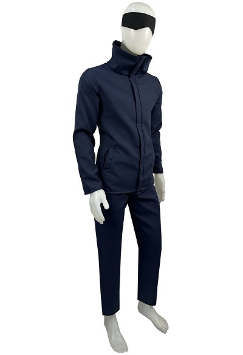
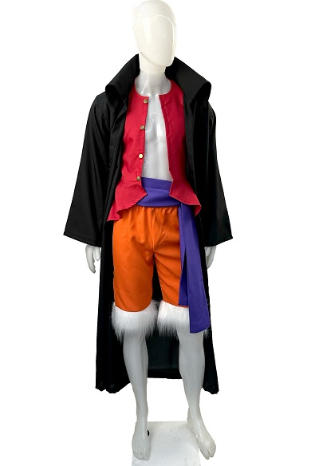

Figuras Coleccionables
OnePiece
Figuras de collecion One Piece de Banpresto, hermosos detalles y un pintado de primera calidad.Estas figuras manejan unas dimensiones de 19cmx 8 de diametro. Vienen una presentación de bolsa ziplop por lo cual no traen una caja tradicional, que mayormente son innecesarias.
JujutsuKaisen
Sumergite en el universo de Jujutsu Kaisen con estos exclusivos Gashapones de 10 cm que presentan a los personajes más emblemáticos: Toji, Gojo, Choso y Geto. Cada figura está diseñada con gran detalle para capturar la esencia y personalidad que han hecho de este anime un fenómeno mundial.
DragonBall
Desata la emoción de las épicas batallas de "Dragon Ball Z" con el exclusivo set de gashapones mixtos, diseñado para los verdaderos guerreros del fandom. Este conjunto coleccionable es un homenaje a la legendaria serie que ha capturado la imaginación de fans alrededor del mundo.
PokemonFigura
Tremendo set de figuras coleccionables de pokemon, cuentan con unas dimensiones de 8x7 cm de diametro. El set cuenta con 3 duos de pokemon: Squirtle+ bulbasaur- Pikachu+ Togepi- bulbasaur+Heracross. Todos los pares tienen una variedad de detalles y un nivel de pintado de otra categoría
Funko Pop
Tanjiro Kamado
Sumergite en el universo de Demon Slayer con el exclusivo Funko Pop! Demon Slayer Tanjiro Respiración Solar 1748. Esta figura coleccionable captura a la perfección al valiente Tanjiro Kamado en una de sus técnicas más poderosas y emblemáticas: la Respiración Solar. Este Funko Pop es el complemento ideal para cualquier fanático del anime Su tamaño compacto y acabado de alta calidad lo hacen perfecto
Majin Vegeta
Desata el poder oscuro de uno de los guerreros más formidables del universo con el Funko Pop! Animation #862 de Dragon Ball Z, que presenta a Majin Vegeta. Esta figura coleccionable captura al Príncipe de los Saiyans en uno de sus momentos más icónicos y dramáticos, cuando es poseído por el hechizo de Babidi y se convierte en Majin Vegeta, con el emblema "M" claramente marcado en su frente.
Charizard

¡Añade el legendario Charizard a tu colección con el Funko Pop! Games #843! Este adorable y detallado Funko Pop! captura la esencia del icónico Pokémon en su clásica forma de vinilo, perfecto para fanáticos de todas las edades. Fabricado con materiales de vinilo duraderos, este Funko Pop! asegura una larga vida en tu estantería de colección.Con su tamaño compacto, es ideal para exhibir en escritorios
Yuji Itadori
¡Lleva la energía de Jujutsu Kaisen a tu colección con el Funko Pop! Este divertido y detallado Funko representa a Yuji Itadori, el protagonista de la exitosa serie, en una pose dinámica que captura su espíritu valiente y decidido.Con un diseño cuidado y calidad superior, este Funko Pop! Plus es el regalo ideal para fanáticos del anime y coleccionistas. Su tamaño compact lo hace perfecto para exhibir en tu escritorio
Mejores Cosplay
Cosplay Capa Akatsuki
Conectate con el legado de los renegados más poderosos del mundo shinobi. Esta capa Akatsuki está confeccionada en tropical mecánico, una tela liviana, resistente y de excelente caída, ideal para eventos, sesiones de fotos y combates épicos (imaginarios o no). Las icónicas nubes rojas están estampadas con vinilo termotransferible de alta calidad, garantizando colores vibrantes y gran durabilidad.
Cosplay Satoru Gojo
El Mejor Cosplay Satoru Gojo Jujutsu Kaisen Incluye: Pantalon, Chaqueta y la Venda Negra. Confecciónado en Tropical Mecanico, una tela intermedia que no pierde el color, no se desforma, no se arruga facilemnte. Se confecciona a medida. Para evitar disgustos o disconformidad, aclaramos: Hacemos cosplays accesibles, la calidad acompaña su precio Esta publicación posee tiempo de disponibilidad de stock
Cosplay Monkey D Luffy
Cosplay Monkey D Luffy en Wano El cosplay Incluye: Chaqueta Roja, Pantalon Corto Naranja con peluche, Faja Violeta y Saco Negro. Confecciónado en Tropical Mecanico, una tela intermedia que no pierde el color, no se desforma, no se arruga facilemnte. Se confecciona a medida. Para evitar disgustos o disconformidad, aclaramos: la calidad acompaña su precio
Attack On Titan Para Gato
Transforma a tu gato en un valiente guerrero con la Capa Shingeki No Kyojin Ataque A Los Titanes. Este disfraz está diseñado para los amantes del anime y los felinos, permitiendo que tu mascota se sumerja en el emocionante mundo de la lucha contra los titanes. Con un diseño que captura la esencia del personaje, tu gato se verá espectacular en cualquier ocasión. La capa es perfecta para sesiones de fotos o fiestas temáticas